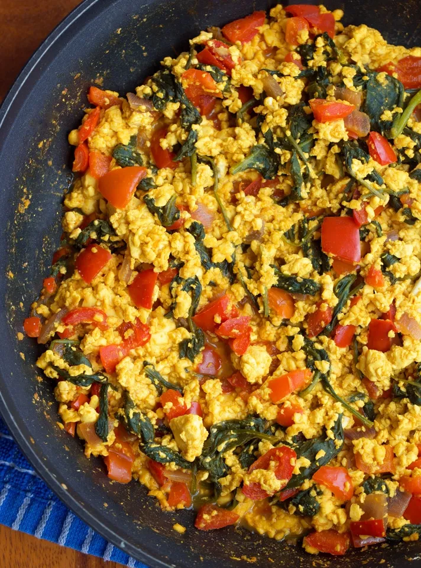

Gunnar's Tofu Scramble

I did not make the scramble in this photoIt's just the closest semblance of the one I makeWhich is less wet than this one
I found this recipe's emaciated skeleton online and decided to
liven it up with some better ingredients.
Ingredients
spices
- turmeric
- chili powder
- black salt
- (optional) garlic powder
- minced garlic
- red lentils
- carrots
- celery
- red bell pepper
- tofu
- spinach
- jalapeno
Steps
- bring 1 cup red lentils to a boil in 2 cups water, then
simmer until ready
- heat pan with coconut oil, then add chopped carrots
and celery
- add chopped red pepper and sauté
- mash tofu with a fork and mix into the pan
- sprinkle all the spices on top and mix it all together
- chop up the jalapeno and mix that in, too
- are the lentils ready? add them in.
- chop up the spinach so you aren't yanking strands of them out
with your teeth every time you bite the burrito I didn't tell you
you'd be making with this
- add it to the mix, in case you hadn't inferred that part
- once that's done, cut up half an avocado onto a burrito shell
and scoop that scramble on, baby
- salsa is also good with this
- wrap it up and cram